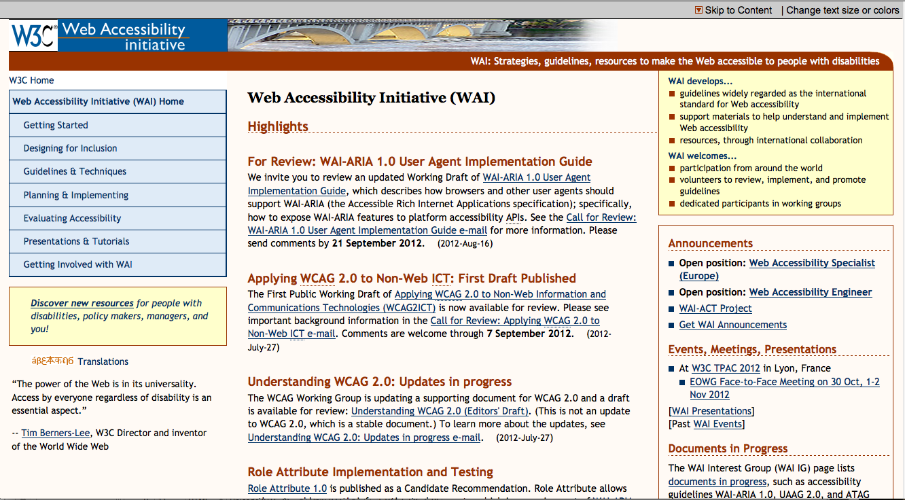

Accessibility Check
Helen Keller would roll over in her grave
Youtube

Go to Youtube for the moving funnies.
Youtube is a video-sharing site that can allow users to view, and upload videos.
As I checked through the 508 Section and the Accessibility check, it seems that a majority of issues in this site are about the img element and that a lot of them don't have the alt attribute or those that do have the attribute don't have any values in them. It would be best that to get rid of a good chunk of the problems would be to check on the img elements and to see if the attributes are being properly placed and their values filled out.
Cheezburger

You love Cheezburgers! so do I, let's laugh for all eternity,...or not, whatever... buzz killington.
Cheezburger is a multi-media sharing site that lets users share content of different kinds (mostly images with captions) and others get to vote on wether it is funny or not.
From both of the checkers, this site has many accessibility problems, ranging from img elements not having alt attributes, to input elements not having proper labels, and also link text not being meaningful. The developer is going to have to look through their code very extensively in order to clear all these different problems by giving the link code more meaning and to give the img elements their necessary attributes.
W3.org/WAI

If you want to fall asleep quickly (kidding...) then read some stuff over at W3's WAI section to get your snooze (seriously, kidding...ok I'm not).
the WAI section in W3.org is a webpage that provides information on how to make other websites more accessible.
The website that helps informs others on how to make better, accessible websites, should follow their own advice. While they only have two known problems in the WAI checker and passing the 508 thing, they do have a lot of potential problems but a majority of the problems are because of their anchor links not probably not having lot of meaning in the alt attributes which can be fixed easily by adding meaningful value in the attribute.
google

I wonder how you spell aluminum...Google it!
Google is a well known search engine that has been used to search for important information to being a spell checker, which is kind of a little bit funny.
Google did not pass either check like the other sites with the major issue being scripting and anchor elements either not having meaningful alt attributes or the element not being able to identify the link destination, so even though all of these problems are potential problems,it's best to fix them just in case. I still don't understand the script issues to clearly but the anchor element can be fixed by filling in the value for the alt attributes and placing a destination for the link, while for the script, I guess check the code to see why the script will make the screen flicker and fix it.